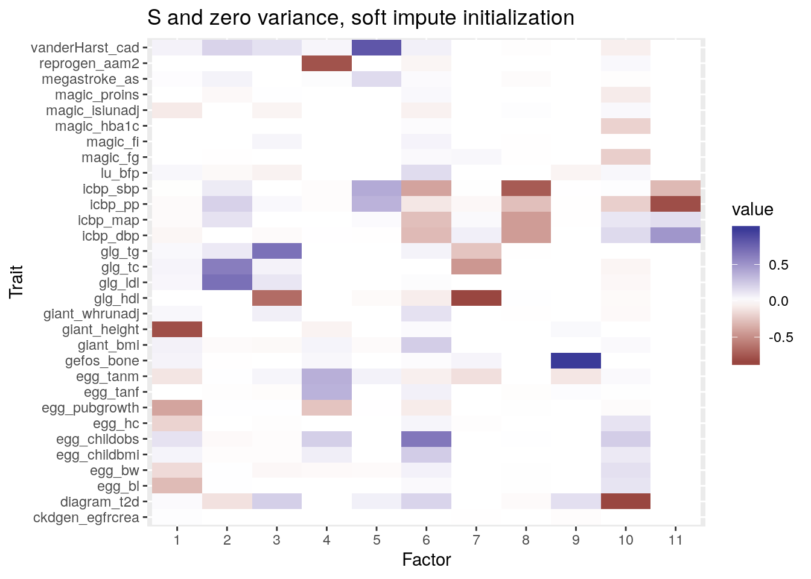
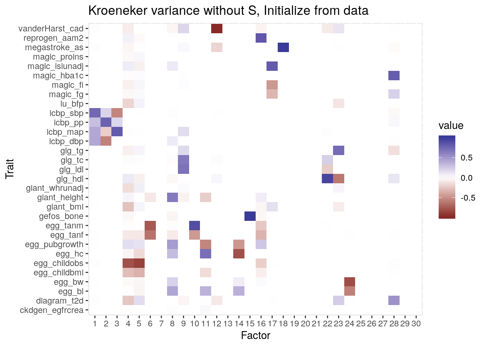
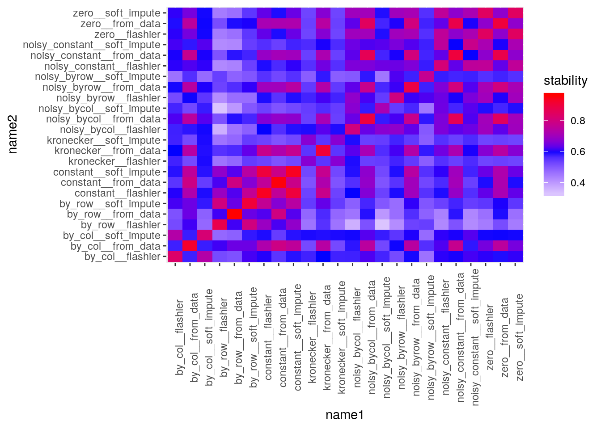
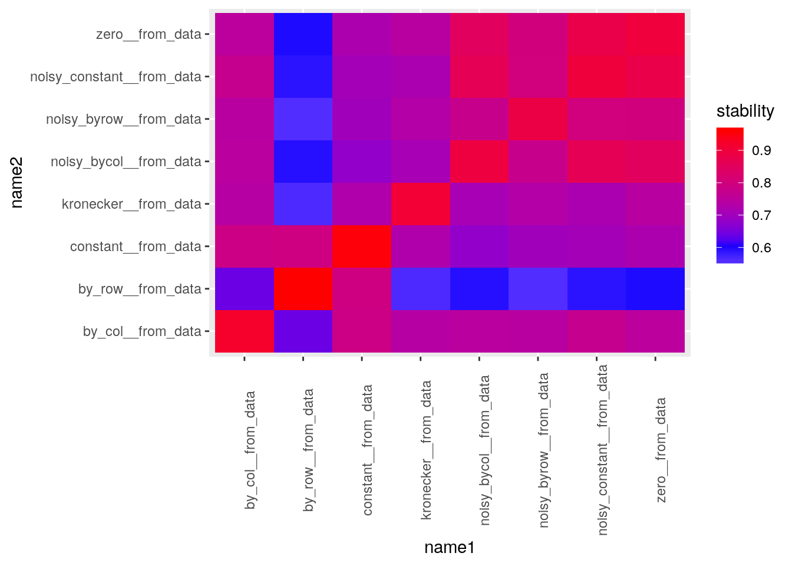
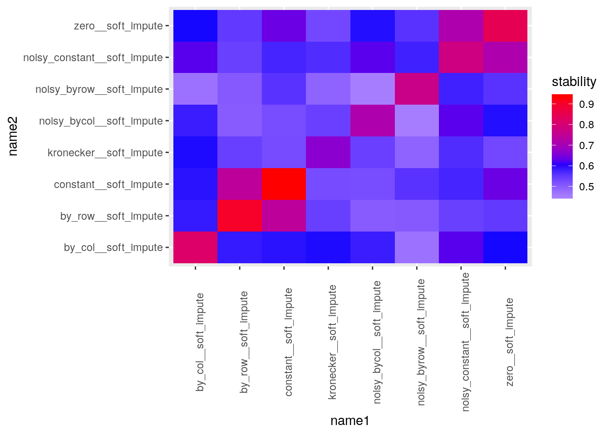

More comparisons, less missingness in data
Jean Morrison
2019-09-03
Last updated: 2019-11-21
Checks: 7 0
Knit directory: sumstatFactors/
This reproducible R Markdown analysis was created with workflowr (version 1.4.0.9000). The Checks tab describes the reproducibility checks that were applied when the results were created. The Past versions tab lists the development history.
Great! Since the R Markdown file has been committed to the Git repository, you know the exact version of the code that produced these results.
Great job! The global environment was empty. Objects defined in the global environment can affect the analysis in your R Markdown file in unknown ways. For reproduciblity it’s best to always run the code in an empty environment.
The command set.seed(20190819) was run prior to running the code in the R Markdown file. Setting a seed ensures that any results that rely on randomness, e.g. subsampling or permutations, are reproducible.
Great job! Recording the operating system, R version, and package versions is critical for reproducibility.
Nice! There were no cached chunks for this analysis, so you can be confident that you successfully produced the results during this run.
Great job! Using relative paths to the files within your workflowr project makes it easier to run your code on other machines.
Great! You are using Git for version control. Tracking code development and connecting the code version to the results is critical for reproducibility. The version displayed above was the version of the Git repository at the time these results were generated.
Note that you need to be careful to ensure that all relevant files for the analysis have been committed to Git prior to generating the results (you can use wflow_publish or wflow_git_commit). workflowr only checks the R Markdown file, but you know if there are other scripts or data files that it depends on. Below is the status of the Git repository when the results were generated:
Ignored files:
Ignored: .Rhistory
Ignored: .Rproj.user/
Ignored: analysis/fixed_factors_cache/
Ignored: analysis/metabo_flash_experiments_cache/
Ignored: analysis/pathway_factors_cache/
Ignored: analysis/simulations_cache/
Untracked files:
Untracked: all_annovar.csv
Untracked: all_genes.txt
Untracked: all_vars.tsv
Untracked: analysis/genetic_correlation.Rmd
Untracked: analysis_data/.~lock.metabo2_gwas.csv#
Untracked: analysis_data/HACER-enhancers.txt
Untracked: analysis_data/HACER_README.txt
Untracked: analysis_data/bc_gwas_mats.RDS
Untracked: analysis_data/bc_gwas_mats_order1.RDS
Untracked: analysis_data/bc_order1__flashier__by_col.RDS
Untracked: analysis_data/bc_order1__flashier__by_row.RDS
Untracked: analysis_data/bc_order1__flashier__constant.RDS
Untracked: analysis_data/bc_order1__flashier__kronecker.RDS
Untracked: analysis_data/bc_order1__flashier__noisy_bycol.RDS
Untracked: analysis_data/bc_order1__flashier__noisy_byrow.RDS
Untracked: analysis_data/bc_order1__flashier__noisy_constant.RDS
Untracked: analysis_data/bc_order1__flashier__zero.RDS
Untracked: analysis_data/bc_order1__from_data__by_col.RDS
Untracked: analysis_data/bc_order1__from_data__by_row.RDS
Untracked: analysis_data/bc_order1__from_data__constant.RDS
Untracked: analysis_data/bc_order1__from_data__kronecker.RDS
Untracked: analysis_data/bc_order1__from_data__noisy_bycol.RDS
Untracked: analysis_data/bc_order1__from_data__noisy_byrow.RDS
Untracked: analysis_data/bc_order1__from_data__noisy_constant.RDS
Untracked: analysis_data/bc_order1__from_data__zero.RDS
Untracked: analysis_data/bc_order1__soft_impute__by_col.RDS
Untracked: analysis_data/bc_order1__soft_impute__by_row.RDS
Untracked: analysis_data/bc_order1__soft_impute__constant.RDS
Untracked: analysis_data/bc_order1__soft_impute__kronecker.RDS
Untracked: analysis_data/bc_order1__soft_impute__noisy_bycol.RDS
Untracked: analysis_data/bc_order1__soft_impute__noisy_byrow.RDS
Untracked: analysis_data/bc_order1__soft_impute__noisy_constant.RDS
Untracked: analysis_data/bc_order1__soft_impute__zero.RDS
Untracked: analysis_data/bc_zscore_order1__flashier__by_col.RDS
Untracked: analysis_data/bc_zscore_order1__flashier__by_row.RDS
Untracked: analysis_data/bc_zscore_order1__flashier__constant.RDS
Untracked: analysis_data/bc_zscore_order1__flashier__kronecker.RDS
Untracked: analysis_data/bc_zscore_order1__flashier__noisy_bycol.RDS
Untracked: analysis_data/bc_zscore_order1__flashier__noisy_byrow.RDS
Untracked: analysis_data/bc_zscore_order1__flashier__noisy_constant.RDS
Untracked: analysis_data/bc_zscore_order1__flashier__zero.RDS
Untracked: analysis_data/bc_zscore_order1__from_data__by_col.RDS
Untracked: analysis_data/bc_zscore_order1__from_data__by_row.RDS
Untracked: analysis_data/bc_zscore_order1__from_data__constant.RDS
Untracked: analysis_data/bc_zscore_order1__from_data__kronecker.RDS
Untracked: analysis_data/bc_zscore_order1__from_data__noisy_bycol.RDS
Untracked: analysis_data/bc_zscore_order1__from_data__noisy_byrow.RDS
Untracked: analysis_data/bc_zscore_order1__from_data__noisy_constant.RDS
Untracked: analysis_data/bc_zscore_order1__from_data__zero.RDS
Untracked: analysis_data/bc_zscore_order1__soft_impute__by_col.RDS
Untracked: analysis_data/bc_zscore_order1__soft_impute__by_row.RDS
Untracked: analysis_data/bc_zscore_order1__soft_impute__constant.RDS
Untracked: analysis_data/bc_zscore_order1__soft_impute__kronecker.RDS
Untracked: analysis_data/bc_zscore_order1__soft_impute__noisy_bycol.RDS
Untracked: analysis_data/bc_zscore_order1__soft_impute__noisy_byrow.RDS
Untracked: analysis_data/bc_zscore_order1__soft_impute__noisy_constant.RDS
Untracked: analysis_data/bc_zscore_order1__soft_impute__zero.RDS
Untracked: analysis_data/bcai_gwas_mats_noprune.RDS
Untracked: analysis_data/bcai_gwas_mats_order1.RDS
Untracked: analysis_data/bcai_order1__flashier__by_col.RDS
Untracked: analysis_data/bcai_order1__flashier__by_row.RDS
Untracked: analysis_data/bcai_order1__flashier__constant.RDS
Untracked: analysis_data/bcai_order1__flashier__kronecker.RDS
Untracked: analysis_data/bcai_order1__flashier__noisy_bycol.RDS
Untracked: analysis_data/bcai_order1__flashier__noisy_constant.RDS
Untracked: analysis_data/bcai_order1__from_data__by_col.RDS
Untracked: analysis_data/bcai_order1__from_data__by_row.RDS
Untracked: analysis_data/bcai_order1__from_data__constant.RDS
Untracked: analysis_data/bcai_order1__from_data__kronecker.RDS
Untracked: analysis_data/bcai_order1__from_data__noisy_bycol.RDS
Untracked: analysis_data/bcai_order1__from_data__noisy_byrow.RDS
Untracked: analysis_data/bcai_order1__from_data__noisy_constant.RDS
Untracked: analysis_data/bcai_order1__soft_impute__by_col.RDS
Untracked: analysis_data/bcai_order1__soft_impute__by_row.RDS
Untracked: analysis_data/bcai_order1__soft_impute__constant.RDS
Untracked: analysis_data/bcai_order1__soft_impute__kronecker.RDS
Untracked: analysis_data/bcai_order1__soft_impute__noisy_bycol.RDS
Untracked: analysis_data/bcai_order1__soft_impute__noisy_constant.RDS
Untracked: analysis_data/eqtl_genes.RDS
Untracked: analysis_data/flashier_res2019-09-03.RDS
Untracked: analysis_data/metabo2_gwas.csv
Untracked: analysis_data/metabo3_order1__flashier__by_col.RDS
Untracked: analysis_data/metabo3_order1__flashier__by_row.RDS
Untracked: analysis_data/metabo3_order1__flashier__constant.RDS
Untracked: analysis_data/metabo3_order1__flashier__kronecker.RDS
Untracked: analysis_data/metabo3_order1__flashier__noisy_bycol.RDS
Untracked: analysis_data/metabo3_order1__flashier__noisy_byrow.RDS
Untracked: analysis_data/metabo3_order1__flashier__noisy_constant.RDS
Untracked: analysis_data/metabo3_order1__flashier__zero.RDS
Untracked: analysis_data/metabo3_order1__from_data__by_col.RDS
Untracked: analysis_data/metabo3_order1__from_data__by_row.RDS
Untracked: analysis_data/metabo3_order1__from_data__constant.RDS
Untracked: analysis_data/metabo3_order1__from_data__kronecker.RDS
Untracked: analysis_data/metabo3_order1__from_data__noisy_bycol.RDS
Untracked: analysis_data/metabo3_order1__from_data__noisy_byrow.RDS
Untracked: analysis_data/metabo3_order1__from_data__noisy_constant.RDS
Untracked: analysis_data/metabo3_order1__from_data__zero.RDS
Untracked: analysis_data/metabo3_order1__soft_impute__by_col.RDS
Untracked: analysis_data/metabo3_order1__soft_impute__by_row.RDS
Untracked: analysis_data/metabo3_order1__soft_impute__constant.RDS
Untracked: analysis_data/metabo3_order1__soft_impute__kronecker.RDS
Untracked: analysis_data/metabo3_order1__soft_impute__noisy_bycol.RDS
Untracked: analysis_data/metabo3_order1__soft_impute__noisy_byrow.RDS
Untracked: analysis_data/metabo3_order1__soft_impute__noisy_constant.RDS
Untracked: analysis_data/metabo3_order1__soft_impute__zero.RDS
Untracked: analysis_data/metabo3_order1_mask__flashier__by_col.RDS
Untracked: analysis_data/metabo3_order1_mask__flashier__by_row.RDS
Untracked: analysis_data/metabo3_order1_mask__flashier__constant.RDS
Untracked: analysis_data/metabo3_order1_mask__flashier__kronecker.RDS
Untracked: analysis_data/metabo3_order1_mask__flashier__noisy_bycol.RDS
Untracked: analysis_data/metabo3_order1_mask__flashier__noisy_byrow.RDS
Untracked: analysis_data/metabo3_order1_mask__flashier__noisy_constant.RDS
Untracked: analysis_data/metabo3_order1_mask__flashier__zero.RDS
Untracked: analysis_data/metabo3_order1_mask__from_data__by_col.RDS
Untracked: analysis_data/metabo3_order1_mask__from_data__by_row.RDS
Untracked: analysis_data/metabo3_order1_mask__from_data__constant.RDS
Untracked: analysis_data/metabo3_order1_mask__from_data__kronecker.RDS
Untracked: analysis_data/metabo3_order1_mask__from_data__noisy_bycol.RDS
Untracked: analysis_data/metabo3_order1_mask__from_data__noisy_byrow.RDS
Untracked: analysis_data/metabo3_order1_mask__from_data__noisy_constant.RDS
Untracked: analysis_data/metabo3_order1_mask__from_data__zero.RDS
Untracked: analysis_data/metabo3_order1_mask__soft_impute__by_col.RDS
Untracked: analysis_data/metabo3_order1_mask__soft_impute__by_row.RDS
Untracked: analysis_data/metabo3_order1_mask__soft_impute__constant.RDS
Untracked: analysis_data/metabo3_order1_mask__soft_impute__kronecker.RDS
Untracked: analysis_data/metabo3_order1_mask__soft_impute__noisy_bycol.RDS
Untracked: analysis_data/metabo3_order1_mask__soft_impute__noisy_byrow.RDS
Untracked: analysis_data/metabo3_order1_mask__soft_impute__noisy_constant.RDS
Untracked: analysis_data/metabo3_order1_mask__soft_impute__zero.RDS
Untracked: analysis_data/metabo_gwas.csv
Untracked: analysis_data/pathway_loadings_data.RDS
Untracked: analysis_data/pathway_loadings_fit.RDS
Untracked: buttons.css
Untracked: code/flashier_compare.R
Untracked: code/flashier_compare_jason.R
Untracked: code/hide_output.js
Untracked: code/mask_flashier.R
Untracked: code/mask_flashr.R
Untracked: factor1_annovar.csv
Untracked: factor1_genes.txt
Untracked: factor20_annovar.csv
Untracked: factor20_genes.txt
Untracked: factor2_annovar.csv
Untracked: factor2_genes.txt
Untracked: factor6_annovar.csv
Untracked: factor6_genes.txt
Untracked: factor_19_vars.txt
Untracked: factor_1_vars.tsv
Untracked: factor_20_vars.tsv
Untracked: factor_2_vars.tsv
Untracked: factor_6_vars.tsv
Untracked: factor_6_vars.txt
Untracked: k99_analysis.R
Untracked: k99_fit.RDS
Untracked: metabo_factors.RDS
Untracked: snp_annot.RDS
Note that any generated files, e.g. HTML, png, CSS, etc., are not included in this status report because it is ok for generated content to have uncommitted changes.
These are the previous versions of the R Markdown and HTML files. If you’ve configured a remote Git repository (see ?wflow_git_remote), click on the hyperlinks in the table below to view them.
| File | Version | Author | Date | Message |
|---|---|---|---|---|
| Rmd | 694cf34 | Jean Morrison | 2019-11-21 | wflow_publish(“analysis/metabo_flash_experiments_order1.Rmd”) |
| html | 1260379 | Jean Morrison | 2019-09-07 | Build site. |
| Rmd | f1d6d49 | Jean Morrison | 2019-09-07 | wflow_publish(c(“analysis/index.Rmd”, “analysis/metabo_flash_experiments_order1.Rmd”, |
| html | cc94188 | Jean Morrison | 2019-09-04 | Build site. |
| Rmd | d51bfe1 | Jean Morrison | 2019-09-04 | wflow_publish(c(“analysis/index.Rmd”, “analysis/metabo_flash_experiments_order1.Rmd”)) |
Introduction
Warning: replacing previous import 'intervals::reduce' by 'purrr::reduce'
when loading 'sumstatFactors'After initial experiments trying different settings with flashr and flashier I began looking at the loadings for our fits. I noticed that one of the factors was loaded on only a single SNP and that that SNP was missing in most traits. This seemed problematic so I went back to the data and re-prioritized SNPs before LD pruning. In the data set I will explore in this document, SNPs were ranked first by the number of traits with non-missing data and then by lowest \(p\)-value across all traits.
mats <- readRDS("analysis_data/metabo3_gwas_mats_order1.RDS")
mats$beta_hat[is.na(mats$se_hat)] <- NA
mats$se_hat[is.na(mats$beta_hat)] <- InfWe selected the same number of SNPs as previously, , however now only 7% of the data are missing. Throughout this analysis I will use flashier.
Basic Analysis
We start with the same basic analysis as previously, fitting
\[ Y = LF^T + S \] where \(S_{ij} \sim N(0, \hat{se}^2_{ij})\).
fit_zero_siinit <- flashier(data = mats$beta_hat, S = mats$se_hat, var.type = NULL,
fit = "full", init.fn = init.fn.softImpute,
tol = 0.01)
#> Initializing flash object...
#> Adding factor 1 to flash object...
#> Adding factor 2 to flash object...
#> Adding factor 3 to flash object...
#> Adding factor 4 to flash object...
#> Adding factor 5 to flash object...
#> Adding factor 6 to flash object...
#> Adding factor 7 to flash object...
#> Adding factor 8 to flash object...
#> Adding factor 9 to flash object...
#> Adding factor 10 to flash object...
#> Adding factor 11 to flash object...
#> Adding factor 12 to flash object...
#> Factor doesn't significantly increase objective and won't be added.
#> Backfitting 11 factors (tolerance: 1.00e-02)...
#> Difference between iterations is within 1.0e+03...
#> Difference between iterations is within 1.0e+02...
#> Difference between iterations is within 1.0e+01...
#> Difference between iterations is within 1.0e+00...
#> Difference between iterations is within 1.0e-01...
#> Difference between iterations is within 1.0e-02...
#> Nullchecking 11 factors...
#> Wrapping up...
#> Done.Plotting the factors obtained:
traits <- str_split(mats$traits, "/") %>% map(., 2) %>%
unlist(.) %>%
str_replace(., ".top_summary_statistics.tsv.gz", "") %>%
str_replace(., "metabo3_", "")
plot_factors_flashier(fit_zero_siinit, traits) +
ggtitle('S and zero variance, soft impute initialization')
Plotting the loadings:
plot_loadings_flashier(fit_zero_siinit)
All of the factors are loaded on many SNPs and there are no single-trait factors which is a good sign.
Comparing Initializations and Variance Structures
This is a similar comparison to one run by Jason. We are comparing the fits obtained by flashier using three different initiallization schemes:
- “flashier”: the default method adds factors one at a time. Each factor is initialized by finding the best rank-one approximation to the matrix of residuals.
- “softImpute”: uses package softImpute to initialize factors. This gives different results when there is missing data.
- “initialize from data”: adds a bunch of factors all at once using softImpute and then refines the fit via backfitting.
and eight different variance structures. We are fitting \[ Y = LF^T + E + S \] where , \(S_{ij} \sim N(0, \hat{se}^2_{ij})\) and \(E_{ij} \sim N(0, \tau_{ij}^2)\). We consider the following 8 options:
- “constant”: \(S = 0\) and \(\tau_{ij} = \tau\)
- “by_row”: \(S = 0\) and \(\tau_{ij} = \tau_i\)
- “by_col”: \(S = 0\) and \(\tau_{ij} = \tau_p\)
- “kronecker”: \(S = 0\) and \(\tau_{ij} = \tau_i \tau_j\)
- “zero”: Only \(S\) is used, \(E = 0\)
- “noisy_constant”: \(S\) is used and \(\tau_{ij} = \tau\)
- “noisy_byrow”: \(S\) is used and \(\tau_{ij} = \tau_i\)
- “noisy_bycol”: \(S\) is used and \(\tau_{ij} = \tau_j\)
Currently it is not possible to include \(S\) and have a Kronecker variance structure for \(E\). Below is a table summarizing the ELBO relative to the lowest ELBO and number of factors in parenthesis.
res <- expand.grid(init = c("flashier", "soft_impute", "from_data"),
var = c("constant", "by_row", "by_col", "kronecker",
"zero", "noisy_constant", "noisy_byrow",
"noisy_bycol"))
res <- res %>% mutate(file = paste0("analysis_data/metabo3_order1__", init, "__", var, ".RDS"))
rr <- purrr:::map(res$file, function(f){
fit <- readRDS(f)
c(fit$elbo, sum(colSums(fit$loadings.pm[[2]]) != 0))
})
res$elbo <- map(rr, 1) %>% unlist()
res$nfactors <- map(rr, 2) %>% unlist()
max_elbo <- max(res$elbo)
res <- res %>% mutate(elbo =elbo - max_elbo,
text = paste0(round(elbo), "(", nfactors, ")"))
tab <- res %>% select(init, var, text) %>% spread(key = init, value = text)
knitr::kable(tab)| var | flashier | soft_impute | from_data |
|---|---|---|---|
| constant | -24503(19) | -23261(20) | -14477(30) |
| by_row | -26871(9) | -23177(13) | -8463(30) |
| by_col | -13803(9) | -13740(9) | -7570(29) |
| kronecker | -6363(4) | -6363(4) | 0(21) |
| zero | -17207(11) | -17207(11) | -10319(26) |
| noisy_constant | -19581(9) | -22380(8) | -10205(26) |
| noisy_byrow | -14312(7) | -16629(6) | -7361(22) |
| noisy_bycol | -16438(7) | -17275(5) | -10393(26) |
Initializing from the data tends to give a higher ELBO than the other initialization schemes and the Kronecker variance structure which doesn’t include \(S\) tends to out perform the other variance structures. This initialization scheme also gives the most factors. Taking a lok at the fit with the highest ELBO:
best_fit <- readRDS("analysis_data/metabo3_order1__from_data__kronecker.RDS")
plot_factors_flashier(best_fit, traits) +
ggtitle('Kroeneker variance without S, Initialize from data')
In some ways these factors are qualitatively different than we have obtained before. For example, there is very little sharing between birthweight and type 2 diabetes.
Despite these results, I think that including \(S\) reflects the model better.
Comparison of factors by stability metric
I have implemented the stability metric for sparse factors propsed by Gao, Brown, and Engelhardt (2013). This metric compares estimated factor matrices allowing for “factor switching” and can allow us to see how similar the factors estimated using each variance type and initialization are.
f_mats <- purrr:::map(res$file, function(f){
fit <- readRDS(f)
fit$loadings.pm[[2]]
})
names <- with(res, paste0(var, "__", init))
stab <- expand.grid(m1=1:24, m2=1:24)
s <- purrr::map(seq(nrow(stab)), function(j){
#cat(j, ": ")
gao_stability_sparse(f_mats[[stab[j,1]]], f_mats[[stab[j,2]]])})
stab$stability <- unlist(s)
stab$name1 <- names[stab$m1]
stab$name2 <- names[stab$m2]ggplot(stab) + geom_tile(aes(x=name1, y = name2, fill=stability)) +
scale_fill_gradient2(low="white", mid = "blue", high="red", midpoint=0.6) +
theme(axis.text.x = element_text(angle=90))
stab %>% filter(str_detect(name1, "from_data") & str_detect(name2, "from_data")) %>%
ggplot(.) + geom_tile(aes(x=name1, y = name2, fill=stability)) +
scale_fill_gradient2(low="white", mid = "blue", high="red", midpoint=0.6) +
theme(axis.text.x = element_text(angle=90))
stab %>% filter(str_detect(name1, "soft_impute") & str_detect(name2, "soft_impute")) %>%
ggplot(.) + geom_tile(aes(x=name1, y = name2, fill=stability)) +
scale_fill_gradient2(low="white", mid = "blue", high="red", midpoint=0.6) +
theme(axis.text.x = element_text(angle=90))
stab %>% filter(str_detect(name1, "flashier") & str_detect(name2, "flashier")) %>%
ggplot(.) + geom_tile(aes(x=name1, y = name2, fill=stability)) +
scale_fill_gradient2(low="white", mid = "blue", high="red", midpoint=0.6) +
theme(axis.text.x = element_text(angle=90))
Comparisons by masking data
I also compared the methods by masking some of the effect estimates and using the matrix decomposition to estimate them. The following table summarizes the average squared error over 5 iterations and in parentheses the standard error.
res <- expand.grid(init = c("flashier", "soft_impute", "from_data"),
var = c("constant", "by_row", "by_col", "kronecker",
"zero", "noisy_constant", "noisy_byrow",
"noisy_bycol"))
res <- res %>% mutate(file = paste0("analysis_data/metabo3_order1_mask__", init, "__", var, ".RDS"))
rr <- purrr:::map(res$file, function(f){
x <- readRDS(f)
c(mean(x$errs), sd(x$errs))
})
res$mean <- map(rr, 1) %>% unlist()
res$sd <- map(rr, 2) %>% unlist()
res <- res %>% mutate(text = paste0(round(mean, digits=2), "(", round(sd, digits=2), ")"))
tab <- res %>% select(init, var, text) %>% spread(key = init, value = text)
knitr::kable(tab)| var | flashier | soft_impute | from_data |
|---|---|---|---|
| constant | 0.22(0.01) | 0.19(0.01) | 0.01(0) |
| by_row | 0.97(0.31) | 0.78(0.31) | 0.36(0.32) |
| by_col | 1.92(0.07) | 1.83(0.12) | 1.02(0.03) |
| kronecker | 2.34(0.34) | 2.34(0.34) | 0.64(0.41) |
| zero | 4.4(0.9) | 4.4(0.9) | 3.89(0.89) |
| noisy_constant | 4.5(0.91) | 4.87(0.91) | 3.89(0.9) |
| noisy_byrow | 4.62(0.89) | 4.51(0.87) | 3.98(0.91) |
| noisy_bycol | 4.61(0.93) | 4.83(0.92) | 4.1(0.91) |
The constant variance structure has the lowest error while the variance structures involving \(S\) have higher. I am not currently sure what explains this.
Quick comparison with flashr
As a quick comparison, using the add_factors_from_data method in flashr with “zero” variance structure
Next goals: 1. Can we have factors that are loaded on only specific factors. 2. Can we use lfsr and SNPs to interpet factors 3. Is it interesting to compute the estimated covariance of the contributions to each phenotype? \(Cov( \sum_{j=1}^p \hat{Y}_{ij}S_j, \sum_{j=1}^p \hat{Y}_{i^\prime j}S_j) = \hat{Y}_{ij}\hat{Y}_{i^\prime j}2f_j(1-f_j)\)
sessionInfo()
#> R version 3.6.1 (2019-07-05)
#> Platform: x86_64-pc-linux-gnu (64-bit)
#> Running under: Ubuntu 18.04.3 LTS
#>
#> Matrix products: default
#> BLAS: /usr/lib/x86_64-linux-gnu/openblas/libblas.so.3
#> LAPACK: /usr/lib/x86_64-linux-gnu/libopenblasp-r0.2.20.so
#>
#> locale:
#> [1] LC_CTYPE=en_US.UTF-8 LC_NUMERIC=C
#> [3] LC_TIME=en_US.UTF-8 LC_COLLATE=en_US.UTF-8
#> [5] LC_MONETARY=en_US.UTF-8 LC_MESSAGES=en_US.UTF-8
#> [7] LC_PAPER=en_US.UTF-8 LC_NAME=C
#> [9] LC_ADDRESS=C LC_TELEPHONE=C
#> [11] LC_MEASUREMENT=en_US.UTF-8 LC_IDENTIFICATION=C
#>
#> attached base packages:
#> [1] stats graphics grDevices utils datasets methods base
#>
#> other attached packages:
#> [1] reshape2_1.4.3 forcats_0.4.0
#> [3] stringr_1.4.0 dplyr_0.8.3
#> [5] purrr_0.3.2 readr_1.3.1
#> [7] tidyr_0.8.3 tibble_2.1.3
#> [9] ggplot2_3.2.1 tidyverse_1.2.1
#> [11] sumstatFactors_0.0.0.9000 flashier_0.1.16
#>
#> loaded via a namespace (and not attached):
#> [1] httr_1.4.1 RMySQL_0.10.17 jsonlite_1.6
#> [4] foreach_1.4.7 modelr_0.1.5 assertthat_0.2.1
#> [7] highr_0.8 mixsqp_0.1-97 cellranger_1.1.0
#> [10] yaml_2.2.0 ebnm_0.1-24 pillar_1.4.2
#> [13] backports_1.1.4 lattice_0.20-38 glue_1.3.1
#> [16] digest_0.6.20 rvest_0.3.4 colorspace_1.4-1
#> [19] htmltools_0.3.6 Matrix_1.2-17 plyr_1.8.4
#> [22] pkgconfig_2.0.2 broom_0.5.2 haven_2.1.1
#> [25] scales_1.0.0 intervals_0.15.1 whisker_0.4
#> [28] git2r_0.26.1 generics_0.0.2 withr_2.1.2
#> [31] ashr_2.2-32 lazyeval_0.2.2 cli_1.1.0
#> [34] magrittr_1.5 crayon_1.3.4 readxl_1.3.1
#> [37] evaluate_0.14 fs_1.3.1 doParallel_1.0.15
#> [40] nlme_3.1-141 MASS_7.3-51.4 xml2_1.2.2
#> [43] truncnorm_1.0-8 tools_3.6.1 hms_0.5.1
#> [46] softImpute_1.4 munsell_0.5.0 compiler_3.6.1
#> [49] rlang_0.4.0 grid_3.6.1 iterators_1.0.12
#> [52] rstudioapi_0.10 labeling_0.3 rmarkdown_1.15
#> [55] gtable_0.3.0 codetools_0.2-16 DBI_1.0.0
#> [58] flashr_0.6-6 R6_2.4.0 lubridate_1.7.4
#> [61] knitr_1.24 zeallot_0.1.0 workflowr_1.4.0.9000
#> [64] rprojroot_1.3-2 stringi_1.4.3 pscl_1.5.2
#> [67] parallel_3.6.1 SQUAREM_2017.10-1 Rcpp_1.0.2
#> [70] vctrs_0.2.0 tidyselect_0.2.5 xfun_0.9